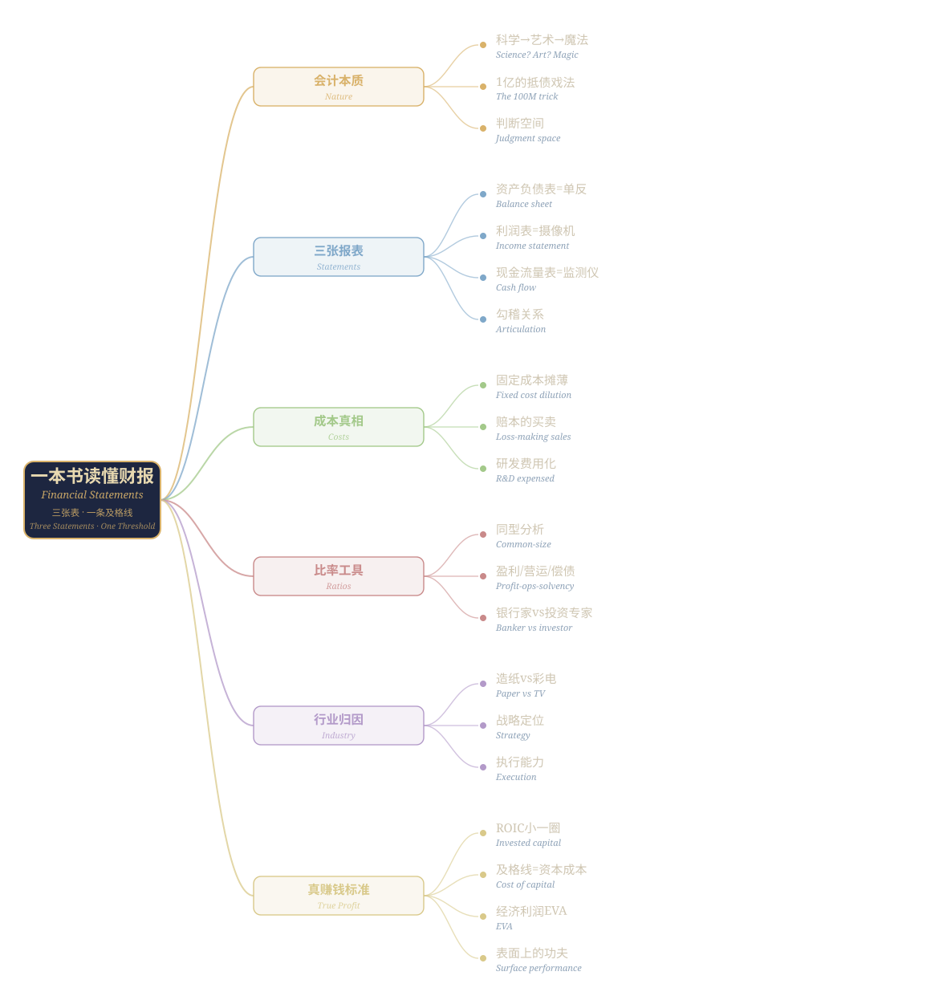

一本书读懂财报
〇 · 书籍信息
基本信息
| 书名 | 《一本书读懂财报》——清华会计系教授写给零基础读者的三张报表全解 |
|---|---|
| 作者 | 肖星：清华大学经管学院会计系教授，MPAcc 项目负责人——把会计讲成故事的少数派：所有概念都配一个故事 |
| 结构 | 引言（会计是魔法）→ 资产负债表 → 利润表 → 现金流量表 → 三表勾稽 → 活用三表（比率/营运/偿债）→ 影响财务数据的因素 → 怎样的公司才算好公司——从单反相机到及格线，一条完整的读表路线 |
| 体裁 | 入门书：零专业术语门槛——它最强的发明是把三张表写成三种相机：单反（某瞬间）、摄像机（一段过程）、监测仪（现金心跳） |
| 一句话 | 利润表好看不等于赚钱——只有投资资本回报率超过资本成本，那才是真的赚钱；书中那家营收增长 35% 的公司，两年都在亏本。 |
一 · 核心主题总览
三张报表背后站着四个母题：① 会计是魔法
老教授三段经历：本科老师说会计是科学，研究生导师说是艺术，事务所前辈说都不是——开头那个 1 亿亏损变 3000 万盈利的抵债戏法证明：会计存在大量判断与选择空间，同一事实可以长出不同的报表。
② 三表即三台机器
资产负债表是单反相机（定格某一时点的家底）、利润表是摄像机（记录一段期间的收支过程）、现金流量表是监测仪（追踪现金的真实进出）。三表不是并列关系，是同一个企业的三个视角。
③ 及格线思维
好公司不是「有利润」，是「投资资本回报率 > 投资资本成本」——超额收益率为正才算赚钱。书用一家营收年增 35% 的公司证明：亮眼报表下两年经济利润为负。「表面上的功夫」是全书最狠的词。
④ 行业决定长相
造纸与彩电两家企业的财务数据对比：同一指标在不同行业含义完全不同——先看行业大环境，再看战略定位，最后看执行，财务数据才有解释力。
二 · 第一段 引言 · 会计是魔法—— 1 亿的戏法 · 判断空间 · 决策用途 ——
一个亿的戏法
上市公司亏了 1 个亿，老板要用报表把它变成盈利。妙招：用 3000 万的房子抵掉 1.6 亿贷款，再用 1.6 亿现金把房子买回来。上半场 3000 万的房子清了 1.6 亿的债——资产处置收益 1.3 亿进利润表；下半场原价买回——利润表只认出售不认购入。净结果：亏损 1 亿变盈利 3000 万，且完全没违反会计准则。
◆ 语言学习 · 概念 · 会计本质
| 会计 | 「既不是科学，也不是艺术」——有判断空间的信息系统 |
|---|---|
| 利润表 | 只受出售资产影响、不受购入资产影响——戏法利用的正是这条规则 |
| 判断空间 | 会计准则内的选择与估计——「魔法」的技术来源 |
| 决策用途 | 几乎所有人都用会计信息做决策——这正是企业美化报表的动机 |
句型 ｜ 「会计变幻莫测，它往往不是黑白分明的，它存在很多判断和选择，会造成很多不同的结果，会计是魔法。」——全书的定调句：魔法不是贬义，是提醒——读表人必须知道魔法在哪里。
三张表的分工
「为什么几乎所有国家都要求企业做三张报表，而且都是这三张？」——因为企业经济活动分三类：经营、投资、筹资，而三张表各盯一段。资产负债表记录投了什么家底、欠了什么债；利润表记录一段期间赚没赚钱；现金流量表记录现金真实进出。三表互为勾稽：利润表的净利润滚入资产负债表的未分配利润，现金流量表的期末现金对上资产负债表的货币资金。
◆ 语言学习 · 概念 · 三表
| 资产负债表 | 时点报表：资产=负债+股东权益——企业的家底快照 |
|---|---|
| 利润表 | 期间报表：收入-成本费用=利润——企业的经营成绩单 |
| 现金流量表 | 经营/投资/筹资三段现金流——企业的心电图 |
| 勾稽关系 | 三表之间的钩子：净利润→未分配利润；期末现金→货币资金 |
句型 ｜ 「资产负债表——企业的单反相机」「利润表——企业的摄像机」。——章节名的相机比喻：单反定格瞬间，摄像机记录过程——静态与动态，一张报表一台机器。
三 · 第二段 报表的诞生—— 成本 · 固定成本 · 研究支出 ——
生产成本与赔本买卖
「为什么会有人做赔本的买卖？」——因为固定成本的摊薄逻辑：产量越大，单位产品分摊的固定成本越低。企业把产量拉到产能极限时，单件成本骤降，哪怕低价甩卖账面上也可能「盈利」——这是理解制造业亏损与价格战的关键钥匙。研究支出则相反：会计把研发一律计入当期费用——投资未来的钱在当期报表上表现为拖累。
◆ 语言学习 · 概念 · 成本
| 固定成本 | 不随产量变动的成本：产量越大单位成本越低——赔本买卖的成因 |
|---|---|
| 变动成本 | 随产量线性变动的成本：原材料、计件人工 |
| 生产成本 | 料工费的归集——存货的计价基础 |
| 研发费用化 | 研究支出计入当期费用：报表上的「today 坏消息、tomorrow 无痕迹」 |
句型 ｜ 「固定成本『搞出』了什么乱子？」——章节名把成本会计写成连续剧：每一个会计概念都被翻译成一个悬念。
销售的瞬间
销售活动对报表的冲击是三表联动的最佳示范：一笔销售同时改变收入（利润表）、应收账款或现金（资产负债表）、经营现金流（现金流量表）。「资产负债表与利润表之间有什么关系」一节给出全书最核心的勾稽：利润是照片之间的胶片，资产是每一帧的定格——利润表解释资产负债表净资产的变化。
◆ 语言学习 · 概念 · 勾稽
| 应收账款 | 卖出去了钱没到账——利润与现金分离的起点 |
|---|---|
| 营业收入 | 利润表的第一行：确认时点决定利润归属期间 |
| 未分配利润 | 历年净利润的沉淀池——利润表向资产负债表注入的管道 |
| 三表联动 | 一笔交易三张表同时变化——读表必须三表互证 |
习语 ｜ 「利润是观点，现金是事实」——书未直说但贯穿全篇的行规：应收账款上的利润随时可能变成坏账，现金不会。
四 · 第三段 活用三表—— 比率 · 行业 · 同型分析 ——
比率分析五件套
同型分析把报表全部除以总收入看结构；比率分析分四组：盈利能力（毛利率/净利率）、营运能力（周转率）、短期偿债（流动比率）、长期偿债（资产负债率）。银行家和投资专家最爱哪张表？——银行看现金流量表和偿债比率，投资人看盈利与营运；「收购时，资产和负债谁更危险」一节则揭示：资产可能虚高，负债可能被低估。
◆ 语言学习 · 工具 · 比率
| 同型分析 | 全部报表项目除以总收入：看结构占比 |
|---|---|
| 周转率 | 营运能力的核心：一年内资产转了几圈 |
| 流动比率 | 流动资产/流动负债：短期偿债的体温计 |
| 资产负债率 | 负债/资产：长期偿债与杠杆水平 |
句型 ｜ 「收购时，资产和负债谁更危险？」——章节名自带反转：多数人怕负债，其实藏雷的常常是资产——应收、存货、商誉都可能虚高。
造纸与彩电
行业差异的对照组：造纸企业重资产、高固定成本、强周期；彩电企业竞争激烈、毛利率被压薄。「行业大环境对企业做了些什么」一节用两家企业的动态数据证明：同样的指标数字，在不同行业是好是坏完全不同——读财务数据的第一步永远是先问行业。
◆ 语言学习 · 概念 · 行业
| 重资产 | 造纸模式：固定资产占比高——折旧与产能利用率决定生死 |
|---|---|
| 薄毛利 | 彩电模式：竞争压毛利率——周转速度成为生命线 |
| 战略定位 | 成本领先 or 差异化：定位不同，财务长相必不同 |
| 执行能力 | 同行业同战略下的第三变量——财务数据的最后一层解释 |
句型 ｜ 「影响财务数据的因素无非就是行业大环境、企业战略定位和战略执行能力。」——三层归因框架：读表人先看天（行业），再看路（战略），最后看腿（执行）。
五 · 第四段 好公司与及格线—— ROIC · 资本成本 · 经济利润 ——
投资资本回报率
总资产报酬率不精确的两处：分母混入了不付息的负债（应付账款/工资/税金），分子忘了债权人。投资资本回报率（ROIC）= 税后营业净利润 ÷ 投资资本（股东权益+有息负债）——分子分母对等，「在精确性上秒杀了总资产报酬率」。
◆ 语言学习 · 工具 · ROIC
| 投资资本 | 股东权益+有息负债——比总资产「小一圈」的真实投入 |
|---|---|
| 税后营业净利润 | 净利润加回利息：股东与债权人的共同回报 |
| 总资产报酬率 | ROIC 的粗糙版：分子分母不对等 |
| 秒杀 | 作者的原话修辞——ROIC 对总资产报酬率的精确性碾压 |
句型 ｜ 「投资资本是一个比总资产『小一圈』的概念。」——「小一圈」的白话定义：把不用付利息的负债从分母里请出去，衡量才诚实。
经济利润与真赚钱
及格线 = 投资资本成本。超额收益率 = 投资资本回报率 − 投资资本成本；超额收益率 × 投资资本 = 经济利润（EVA）。回到那家营收年增 35% 的公司：三年 ROIC 为 10%、5%、6.6%，扣除资本成本后只有 2008 年经济利润为正——「表面上的功夫」：收入与利润高增长不等于创造价值，股东的钱是有价格的。
◆ 语言学习 · 工具 · EVA
| 投资资本成本 | 股东与债权人要求的综合回报率——及格线本体 |
|---|---|
| 超额收益率 | ROIC − 资本成本：为正才及格 |
| 经济利润 EVA | 超额收益率×投资资本——会计利润的打假工具 |
| 股东的钱有价格 | 股权不是免费资金：机会成本藏在资本成本里 |
习语 ｜ 「表面上的功夫」——全书最狠的判词：利润表的高增长可能是资本成本的遮羞布——衡量企业用经济利润，不用会计利润。
六 · 人物图鉴与成长弧线—— 主角配角 · 一张表看穿 ——
主要人物
肖星——叙述者：清华会计系教授——全书人设是「讲故事会计」：每个概念配一个故事、一个比喻、一个悬念
老教授——引言的主人公：科学/艺术/魔法三段式认知——会计定义的三个层次，也是全书的三层递进
亏 1 亿的上市公司——抵债戏法的表演者——判断空间存在的实证：合法合规也能「造」出利润
刘洋公司——营收年增 35% 的样本企业——「表面上的功夫」的主角：高增长面具下的两年亏本
次要人物（功能位）
| 造纸企业 | 行业对照组 A：重资产、强周期——固定资产与产能利用率决定命运 |
|---|---|
| 彩电企业 | 行业对照组 B：竞争激烈、薄毛利——周转率是生命线 |
| 银行家 | 三表的偏爱者之一：盯现金流量表与偿债比率——借款人的视角 |
| 投资人 | 另一偏爱者：盯盈利与营运——回报视角；「银行家和投资专家最爱哪张表」的答案藏着立场经济学 |
七 · 主题与象征—— 每个道具都在说话 ——
| 单反相机 ↔ 资产负债表 | 定格某一时点：家底的快照——一切比率分析的原点 |
|---|---|
| 摄像机 ↔ 利润表 | 记录一段期间：经营的连续剧——利润是过程而非瞬间 |
| 1 个亿戏法 ↔ 判断空间 | 合法的利润魔法：读表人必须假设利润表会说谎 |
| 及格线 ↔ 资本成本 | ROIC 的对照尺：赚钱的定义由股东的机会成本决定 |
| 小一圈 ↔ 投资资本 | 比总资产小一圈：精确衡量从剔除不付息负债开始 |
八 · 写作手法赏析—— 怎么写，就能怎么学 ——
① 故事教学法
每个概念一个故事：1 亿戏法、老教授三答、刘洋公司——零术语门槛的代价与回报
② 相机比喻系
单反/摄像机/监测仪：三张报表的性格一秒记住
③ 悬念章节名
「固定成本搞出了什么乱子」「资产和负债谁更危险」——章节名全是问句：教材写成了连续剧
④ 对照组设计
造纸 vs 彩电、总资产报酬率 vs ROIC——概念的理解全部通过对照完成
九 · 名段欣赏—— 原文精读 · 逐段赏析 ——
十 · 金句摘录—— 14 条 · 中英对照 · 带出处 ——
"会计是一门科学，哪怕是犯了一点错误，也不能算做好了会计工作。"—— 引言（本科老师）
"会计是一门艺术……要在会计准则的范围之内作出选择和判断，让它能够准确地描绘一个企业。"—— 引言（研究生导师）
"会计变幻莫测，它往往不是黑白分明的，它存在很多判断和选择，会造成很多不同的结果，会计是魔法。"—— 引言
"几乎所有人都或多或少地用会计信息作决策。"—— 引言
"好企业应该是赚钱的。"—— 怎样的公司才算好公司
"投资资本是一个比总资产「小一圈」的概念。"—— 投资资本回报率
"投资资本回报率在精确性上「秒杀」了总资产报酬率。"—— 投资资本回报率
"它的及格线就应该是企业使用这些投资人资本的成本，也就是投资资本成本。"—— 及格线
"企业的盈利只有高于其资本成本时才会为股东创造价值。"—— 经济利润定义
"影响财务数据的因素无非就是行业大环境、企业战略定位和战略执行能力。"—— 行业因素
"收购时，资产和负债谁更「危险」？"—— 目录
"固定成本「搞出」了什么乱子？"—— 目录
"资产负债表——企业的单反相机。"—— 章节名
"利润表——企业的摄像机。"—— 章节名
十一 · 拓展阅读—— 原文 · 词条 · 译文 ——
十二 · 个人感悟与心得—— 三点心得 ——
三点感悟
① 利润是判断的产物
1 亿戏法给出的终身提醒：会计准则内也存在大量自由度——读报表的第一反应应是「这个利润是怎么被选择出来的」。会计不是科学也不是艺术，是需要审读的证据。
② 三表必须互证
单反+摄像机+监测仪的比喻之所以好用，是因为它暗示了方法论：任何一张表单独看都可能被骗——利润要现金背书，资产要利润解释，负债要偿付计划兜底。
③ 资本有价格
「好公司=赚钱」的重新定义是全书最大贡献：ROIC−资本成本>0 才是真赚钱；增长可以是价值毁灭的伪装——经济利润是一切成长故事的白噪声检测器。
一句话带走：报表会说故事，资本成本会说真话——听真话的那只耳朵，叫经济利润。
十三 · 一页速查（复习用）
| 会计是魔法 | 准则内有判断空间：1 亿亏损合法变 3000 万盈利——读表先存疑 |
|---|---|
| 三表分工 | 资产负债表=单反（时点）；利润表=摄像机（期间）；现金流量表=监测仪（心跳） |
| 勾稽关系 | 净利润→未分配利润；期末现金→货币资金——三表互证才可信 |
| ROIC 与及格线 | 税后营业净利润÷（股东权益+有息负债）；及格线=资本成本 |
| 经济利润 | （ROIC−资本成本）×投资资本：高增长仍可能亏本——赚钱以 EVA 为准 |
十四 · 全书思维导图—— 一图纵览 ——

一图纵览全书骨架 · 中英双语对照 · 手机端可左右滑动查看全图